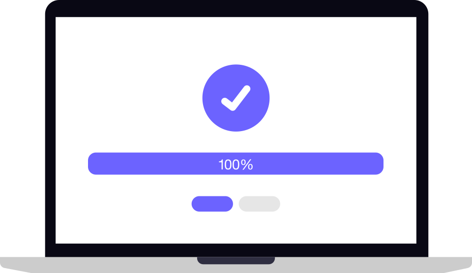

Protected
All protection features are active on this device
Real-time protection on · Definitions up to date
0
Threats Blocked
1,247
Files Scanned
32
Days Protected
Virus Scan
Select a scan type to check your system
Protection
Manage real-time security features
Driver Protection
Kernel-level protection via XIGUASecurityAgent
Real-time Protection
Monitors files and processes in real-time
Web Protection
Blocks malicious websites and downloads
Network Security
Monitors network traffic for suspicious activity
Identity Protection
Protects against identity theft and phishing
Quarantine
Manage isolated threats and suspicious files
No Threats Detected
Your quarantined items will appear here
Event Logs
View security events and scan history
10:32:15
INFO
XIGUASecurity started successfully
10:32:16
INFO
Real-time protection enabled
10:32:17
SUCCESS
Virus definitions updated
10:32:18
INFO
Quick scan completed - 0 threats found
Settings
Configure XIGUASecurity preferences
General
Start with Windows
Automatically launch on system startup
Minimize to Tray
Keep running in system tray when closed
Automatic Updates
Download and install updates automatically
Scan
Scan Archives
Include compressed archives in scans
Heuristic Analysis
Use behavioral detection for unknown threats
About
XIGUASecurity
Version 1.0.0
Modern Antivirus Protection